Fichas de Tecnología
18 fichas de Tecnología en español para imprimir (PDF), sin preparación y con solucionario: comprensión lectora, búsquedas del tesoro y más, filtrables por grado.
18 recursos
Grado
Por grado: 5.º de primaria
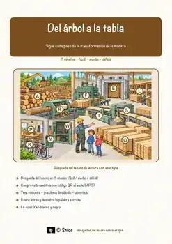
«Del árbol a la tabla» – Búsqueda del tesoro de lectura
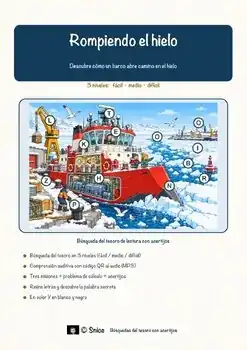
«Rompiendo el hielo» – Búsqueda del tesoro de lectura
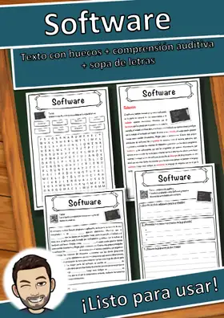
Software – Ficha: texto con huecos, comprensión auditiva y sopa de letras
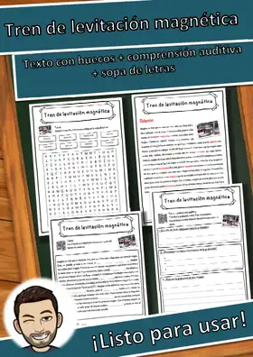
Tren de levitación magnética – Ficha: texto con huecos, comprensión auditiva y sopa de letras
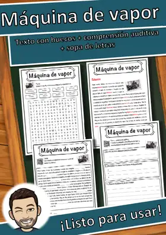
Máquina de vapor – Ficha: texto con huecos, comprensión auditiva y sopa de letras
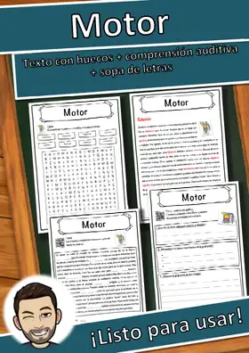
Motor – Ficha: texto con huecos, comprensión auditiva y sopa de letras
Locomotora – Ficha: texto con huecos, comprensión auditiva y sopa de letras

Máquina – Ficha de lectura: texto con huecos, comprensión auditiva y sopa de letras
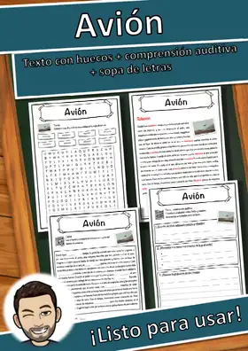
Avión – Ficha: texto con huecos, comprensión auditiva y sopa de letras
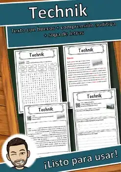
Tecnología – Ficha de lectura: texto con huecos, comprensión auditiva y sopa de letras
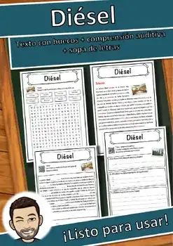
Diésel – Ficha de lectura: texto con huecos, comprensión auditiva y sopa de letras
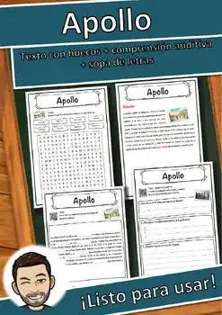
Apolo – Ficha de lectura: texto con huecos, comprensión auditiva y sopa de letras
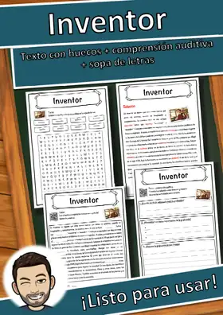
Inventor – Ficha: texto con huecos, comprensión auditiva y sopa de letras
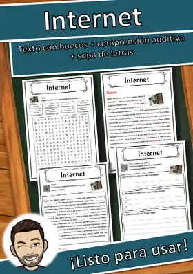
Internet – Ficha: texto con huecos, comprensión auditiva y sopa de letras
Portaviones – Ficha: texto con huecos, comprensión auditiva y sopa de letras
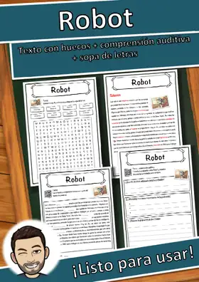
Robot – Ficha: texto con huecos, comprensión auditiva y sopa de letras
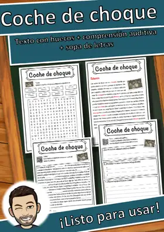
Coche de choque – Ficha: texto con huecos, comprensión auditiva y sopa de letras
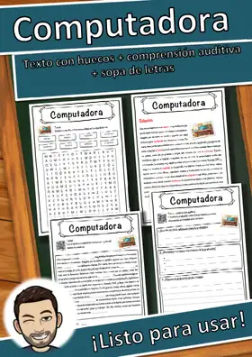
Computadora – Ficha: texto con huecos, comprensión auditiva y sopa de letras
No se encontraron recursos. Prueba con otra palabra o con otro filtro.